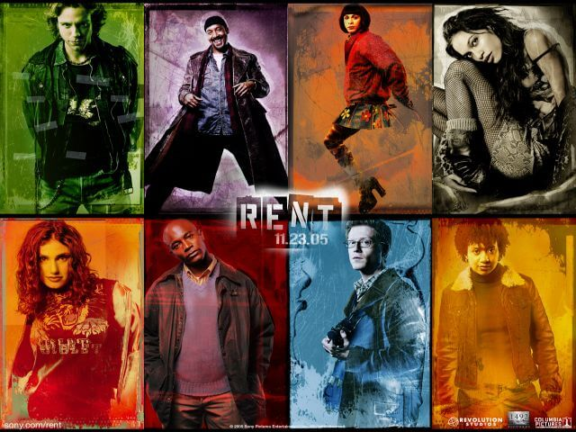

Obras musicales
RENT: Seasons Of Love

1996
Rent es un musical compuesto por Jonathan Larson, basado en la ópera "La Bohème" de Puccini, y relata un año en la vida de un grupo de jóvenes artistas y músicos tratando de sobrevivir en el Nueva York de principios de la década de los 90's, bajo la sombra del sida. Se estrenó en Nueva York el 29 de abril de 1996 en el Nederlander Theatre y la expectación por el estreno se incrementó consecuencia de la muerte de su escritor la vispera a dicho estreno. La obra realizó su último show en septiembre del 2008, habiendo ganado 4 Premios Tony y el Premio Pulitzer.
El álbum con las canciones originales del show, es uno de los más famosos en la música americana, y en él se incluye la canción
"Seasons of Love" compuesta por Jonathan Larson y producida, cantada y arreglada por Stevie Wonder.

five hundred twenty five thousand six hundred minutes
five hundred twenty five thousand moments so dear
five hundred twenty five thousand six hundred minutes
how do you measure? measure a year
in daylights,
in sunsets,
in midnights,in cups of coffee,
in inches, in miles, in laughter, in strife
in five hundred twenty five thousand six hundred minutes
how do you measure a year in a life?
how about, love?
how about, love?
how about, love?
measure in love...
seasons of love...
seasons of love...
(Stevie)
five hundred twenty five thousand six hundred minutes,
five hundred twenty five thousand journeys to plan,
five hundred twenty five thousand six hundred minutes,
how do you measure a life of a woman or a man?
in truths that she learned,
or in times that he cried,
in bridges he burned,
or the way that she died,
(Cast)
its time now, to sing out though,
the story never ends,
let's, celebrate remember a year in a life, of friends,
(Cast)remember the love...
(Stevie)(oh you gotta remember the love)
(Cast)remember the love...
(Stevie)(oh yeah,yeah,yeah,yeah,yeah,yeah,yeah,yeah,yeah)
(Cast)remember the love...
(Stevie)('member, sing out, give out, measure your life!
measure in love, measure in love, measure in love, measure in love, measure in love, Ohhhhhhhh)
(Cast)
seasons of love...
seasons of love...
seasons of love...
seasons of love...
(Cast)
In Diapers - Report Cards
In Spoke Wheels - In Speeding Tickets
In Contracts - Dollars
In Funerals - In Births
(Cast W/ Stevie)
Five Hundred Twenty-Five Thousand
Six Hundred Minutes
How Do You Figure
A Last Year On Earth?
(Stevie)
How Do You Figure
A Last Year On Earth?
(Cast)(Seasons Of Love...)
(Cast W/ Stevie)
How Do You Figure
A Last Year On Earth?
Five Hundred Twenty-Five Thousand
Six Hundred Minutes
How Do You Figure
A Last Year On Earth?
Seasons of....LOVE....